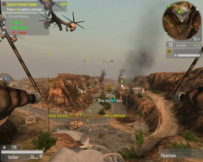
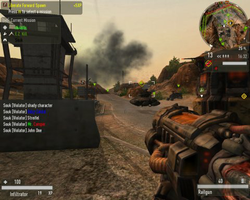
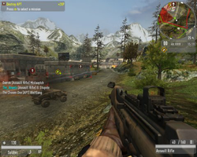

Enemy Territory Quake Wars
Dieser Artikel wurde für die folgenden Ubuntu-Versionen getestet:
Ubuntu 14.04 Trusty Tahr
Hinweis:
Für die Installation wird die Original-DVD benötigt. Um Online zu spielen wird der Original Lizenz-Key benötigt. Ohne Original Key kann man offline gegen Bots oder im Netzwerk spielen.
Zum Verständnis dieses Artikels sind folgende Seiten hilfreich:
Enemy Territory: Quake Wars (kurz ET:QW) ist ein reiner Multiplayer-Shooter. Es handelt sich eigentlich um den Nachfolger von Wolfenstein Enemy Territory, spielt aber im Szenario der Quake Serie und ist dabei zeitlich vor dem zweiten Teil angesiedelt. Durch die großen Levels und Fahrzeuge wurden zudem Elemente der Battlefield-Spiele integriert. Das Spiel nutzt eine erweiterte Doom 3-Engine, welche durch die sog. MegaTexture-Technologie nun in der Lage ist, auch weiträumige Außengebiete darzustellen.
|  |  |  |
| Spielszene | Spielszene | Spielszene |
Installation¶
Hierfür muss der Installer heruntergeladen werden. Eine "Anleitung" findet ihr hier  , dort findet ihr nicht nur die aktuelle Client-Version, sondern auch wie man 32-Bit-Binaries auf einem 64-Bit-System nutzen kann. Das Spiel verwendet nicht den sonst üblichen Loki Installer, sondern die neue Entwicklung MojoSetup . Der heruntergeladene Installer muss zunächst ausführbar gemacht werden [1] (siehe auch [2]):
, dort findet ihr nicht nur die aktuelle Client-Version, sondern auch wie man 32-Bit-Binaries auf einem 64-Bit-System nutzen kann. Das Spiel verwendet nicht den sonst üblichen Loki Installer, sondern die neue Entwicklung MojoSetup . Der heruntergeladene Installer muss zunächst ausführbar gemacht werden [1] (siehe auch [2]):
chmod +x Installer_Datei
Für die Installation legt man nun die DVD des Spiels ein und startet den Vorgang mit dem Befehl [1]
./Installer_Datei
Für eine Root-Installation muss dieser Befehl natürlich mit den entsprechenden Rechten ausgeführt werden. Während des Installationsprozesses muss man die Lizenz für das Spiel und (wenn gewünscht) Punk Buster bestätigen und den Pfad für das Spiel manuell angeben, außer bei einer Standard-Root-Installation.
Wenn man das Spiel auf Deutsch spielen will, muss man die Datei zpak_german000.pk4 von der DVD ins base-Verzeichnis von ET:QW kopieren und in der Datei $HOME/.etqwcl/base/etqwconfig.cfg die Variable seta sys_lang "english" zu seta sys_lang "german" ändern.
Spiel starten¶
Leider erstellt der Installer keine Verknüpfungen, das Spiel kann zunächst nur über die Datei etqw im Verzeichnis von ET:QW gestartet werden [3]. Um den Vorgang komfortabler zu gestalten, kann man entweder eine Verknüpfung zu dieser Datei auf den Desktop (ein passendes Icon namens etqw_icon.png befindet sich im Wurzelverzeichnis der Installation), der Taskleiste oder dem Menü-Editor anlegen oder das Spiel über ein kleines Startskript starten [4]:
1 2 3 | #!/bin/bash cd Pfad/zum/Spiel ./etqw $* |
Dieses speichert man als neue Datei namens etqw ab (natürlich darf dabei nicht die Original-Datei im ET:QW-Verzeichnis überschrieben werden!) und macht sie ausführbar [2]. Wurde das Spiel ins Homeverzeichnis installiert, kann das Skript nun in den Ordner ~bin (wenn nicht vorhanden, erstellen), bei einer Root-Installation ins Verzeichnis /usr/local/bin kopiert werden. Anschließend kann das Spiel mit dem Befehl
etqw
gestartet werden [3].
Tweaks¶
Für Benutzer von Mehrkern CPUs¶
Um den Vorteil von zwei oder mehr Kernen ausnutzen zu können, muss das Spiel mit etqw-rthread an Stelle von etqw gestartet werden. Zusätzlich muss man in der Datei ~/.etqwcl/base/etqwconfig.cfg folgendes hinzufügen:
seta r_usethreadedrenderer "2"
Laut id Software macht sich diese Option insbesondere auf Systemen mit mehr als zwei Kernen (Quad-core, Octal-core) bezahlt.
Hinweis:
Diese Option führt nur bei echten Mehrkernprozessoren zu sichtbaren Leistungssteigerungen. Im Falle von Hyperthreading-CPUs mit nur einem physikalischen Kern, welcher mehrere Kerne "simuliert", ist diese Option nicht empfehlenswert, da hier die Leistungssteigerungen vernachlässigbar sind und es sogar zu deutlichen Leistungseinbrüchen kommen kann.
ET:QW aus verschiedenen Programmen heraus aufrufen und direkt mit einem Server verbinden¶
Allgemeine Shelldatei zum Starten von ET:QW mit Parametern¶
Zuerst wird ET:QW gestartet und man setzt den Online-Account auf "default". Dadurch loggt sich der Client bei jedem Start automatisch ein, was für die folgende Anleitung unentbehrlich ist.
Nachdem man ET:QW wieder beendet hat wird nun ein Startskript angelegt, welches auch als normales Startskript genutzt werden kann. Man legt erstmal auf dem Desktop eine Datei an, im Beispiel heißt die Datei etqw.sh. In diese Datei wird mit einem Texteditor [4] folgendes eingetragen:
1 2 3 4 5 6 7 8 9 10 11 12 13 14 15 16 17 18 19 20 21 22 23 24 25 26 27 28 29 30 31 32 33 34 35 36 37 38 39 40 41 42 43 44 45 46 47 48 49 50 51 52 53 54 55 56 57 58 59 | #!/bin/bash # ||=============================================================|| # || Dieses Script steht unter der cc-sa-nc || # ||Wer Fehler findet, darf diese gerne auf || # ||http://wiki.ubuntuusers.de/Spiele/Enemy_Territory_Quake_Wars || # ||korrigieren || # ||============================================================ || # ||====================================================|| # ||BITTE ANPASSEN pfad zum ET:QW Ordner BITTE ANPASSEN|| # ||====================================================|| cd /usr/local/games/etqw # ||====================================================|| # || BITTE ANPASSEN || # ||Ersetzen eines eventuell verwendeten 3D Desktops || # ||beispielsweise compiz-fusion durch den standard || # ||Fenstermanager der verwendeten Desktopumgebung || # || BITTE ANPASSEN || # ||====================================================|| metacity --replace & # notwendig um mit einem standard deutschen Tastaturlayout # bei Druck auf circumflex (links neben der 1) die Konsole zu öffnen # das ganze wird nach beenden des Spiels wieder zurückgesetzt (xmodmap -e "$TILDE_DE) TILDE_DE="keycode 49 = dead_circumflex degree notsign notsign notsign notsign" TILDE_US="keycode 49 = grave asciitilde" echo $TILDE_US wird ausgeführt xmodmap -e "$TILDE_US" echo $TILDE_US wurde ausgeführt export LD_LIBRARY_PATH="$LD_LIBRARY_PATH:." echo Spiel wird gestartet var=$@ if [ -z "$var" ] ; then # kein Paramter angegeben ./etqw-rthread.x86 #>"~/etqwlog/$(date).log" elif [[ "$var" == etqw://* ]] ; then # es wird das etqw:// Protokoll verwendet length=${#var} length1=$(($length-10)) url=${var:7:$length1} ./etqw-rthread.x86 +connect $url #>"~/etqwlog/$(date).log" else # es wurden aufruf parameter angegeben, die ohne weiteres an ET:QW übergeben werden können ./etqw-rthread.x86 $var #>"~/etqwlog/$(date).log" fi echo Spiel wurde beendet #sleep 19 echo $TILDE_DE wird ausgeführt xmodmap -e "$TILDE_DE" echo alles okay # ||====================================================|| # || BITTE ANPASSEN || # ||Compiz wird geladen, wer dies nicht möchte, oder || # ||einen anderen 3D Desktop verwendet, sollte entweder || # ||den Aufruf von compiz mit einer # versehen, oder || # ||den entsprechenden 3D Desktop im Hintergrund || # ||dies wird mit einem & hinter dem Aufruf erzielt || # || BITTE ANPASSEN || # ||====================================================|| compiz --replace & |
Wobei der Pfad zu ET:QW natürlich angepasst werden muss. Die Datei wird nun abgespeichert und der Editor geschlossen. Im Anschluss macht man sie ausführbar [2]. Jetzt kann man die Datei an einen beliebigen Ort verschieben, wie zum Beispiel /opt.
Nutzung des etqw:// Protokoll aus Firefox heraus¶
Auf einigen Websites (z.B.: http://etqw.splatterladder.com/?mod=serverlist ) findet das etqw-Protokoll Verwendung. Über dieses Protokoll ist es möglich per Mausklick ET:QW zu starten und einem Server beizutreten. Man erkennt das etqw-Protokoll daran, dass ein Link mit dem Prefix "etqw://" beginnt.
Entgegen der Aussage auf der obigen Website, dass der GameLauncher benötigt wird, ist es mit einfachen Mitteln möglich auch ohne diesen unter Linux auf einen ET:QW Server beizutreten.
Als erstes wird Firefox gestartet und als Adresse wird about:config angegeben. Die Warnung wird bestätigt und auf der folgenden Seite führt man einen Rechtsklick aus und geht auf "Neu->Boolean". Als Name gibt man network.protocol-handler.external.etqw ein und als Wert true. Danach macht man noch einen Rechtsklick und geht auf "Neu->String" und gibt diesmal als Name network.protocol-handler.app.etqw und als Wert den Pfad zur eben erstellten etqw.sh an.
Jetzt geht man zum Beispiel auf die Spladderladder-Webseite und klickt auf einen Link der das etqw-Protokoll verwendet. Firefox fragt nun nach, was gemacht werden soll und man muss erneut den Pfad zum Startskript angeben.
Nach der Aktion startet ET:QW ohne weiteres Zutun (nicht nochmal auf den Link klicken) und verbindet sich mit dem Server.
Nutzung von Programmen wie qwstat¶
qwstat ist ein einfacher Serverbrowser für ET:QW, der normalerweise entsprechende Parameter, Server IP, zu nutzender Mod, direkt an ET:QW übergibt. Um die etqw.sh Datei mit QWStat anzusprechen, geht man auf Options und klickt dann bei Path to ETQW auf Change, im folgenden Dialog wählt man die etqw.sh Datei aus und klickt auf Open.
Analog ist das ganze für ähnliche Programme durchzuführen, die ET:QW direkt aufrufen um Parameter zu nutzen.
Problemlösungen¶
Nvidia-Treiber unter 64-Bit¶
Spiele der idTech4-Engine stürzen mit einem OpenGL-Fehler ab, wenn in einem 64-Bit-System der offizielle Treiber von Nvidia verwendet wird, da die falschen Bibliotheken verwendet werden. Folgende Umgebungsvariable behebt das Problem beim Start:
LD_LIBRARY_PATH=/usr/lib32/nvidia-current /usr/local/bin/etqw-rthread
Soundprobleme¶
Wenn der Sound beim Spielen ab und zu stockt oder erst gar nicht vorhanden ist, hilft es, das Spiel per
etqw +set s_driver oss +set NumberOfSpeakers 2-Box
zu starten [4]. Dabei muss die Anzahl der Lautsprecher evtl. angepasst werden, hier sind es zwei. Unter Trusty fehlt das /dev/dsp-Device. Dies kann mit dem Paket osspd-alsa installiert werden.
Anderenfalls kann in der Konfigurationsdatei die Ausgabe auf OpenAL umgestellt werden:
seta s_useOpenAL "1" seta s_libOpenAL "/usr/lib/i386-linux-gnu/libopenal.so.1"
Alternativ kann für eine flüssige ALSA-Ausgabe Pulseaudio temporär deaktiviert werden.
pulseaudio --kill /usr/local/bin/etqw-rthread pulseaudio --start
Dies funktioniert nur mit folgender Zeile in der Datei .pulse/client.conf
autospawn = no
Jedoch muss von nun an sichergestellt werden, dass Pulseaudio mit der Desktopsitzung startet. Möglich wäre es, .config/autostart/pulseaudio.desktop anzulegen:
[Desktop Entry] Exec=pulseaudio --start Name=Pulse Audio starten Comment=Startet Pulse Audio mit der Sitzung, da autospawn=no in .pulse/client.conf NoDisplay=false Type=Application X-GNOME-Autostart-enabled=true X-GNOME-Autostart-delay=5
Probleme mit Vollbild unter Compiz¶
Bei aktiviertem Compiz kann es zu Problemen mit dem Mauszeiger oder dem Vollbildmodus kommen. Dies lässt sich beheben, indem man das Paket compizconfig-settings-manager über die Paketverwaltung installiert (sofern nicht schon geschehen) und dann die Compiz-Einstellungen unter "System -> Einstellungen -> CompizConfig Einstellungs-Manager" aufruft. Dort muss man bei "General Options" den Haken bei "Unredirect Fullscreen Windows" entfernen. Jetzt sollte Compiz während des Spielens keine Probleme mehr bereiten.
Besser ist allerdings, während des Spielens Compiz gänzlich zu deaktivieren, da es einiges an Ressourcen frisst.
Kein Antialiasing¶
Es kann sein dass im spielinternen Menü als einzige Option für Antialiasing "disabled" erscheint. Dieses Problem lässt sich auf eine von zwei Arten lösen. Zum einen kann man in den Einstellungen des proprietären Videotreibers (nvidia-settings bei NVIDIA-Karten) ein bestimmte Antialiasing-Einstellung für alle Anwendungen erzwingen. Zum anderen kann man durch Editieren der Konfigurationsdatei von ET:QW den gewünschten Antialiasing-Level einstellen. Hierzu sucht man in ~/.etqwcl/base/etqwconfig.cfg die folgende Zeile
seta r_multiSamples "0"
und ändert die "0" zu "2" oder "4" ab, je nachdem ob man 2xAA oder 4xAA wünscht. Mehr als 4xAA lässt sich spielintern offenbar nicht einstellen.
Spielinterne Konsole¶
Verwendet man die englische Version des Spiels mit einem deutschen Tastaturlayout, kann man nicht die spielinterne Konsole öffnen. Um dies zu ändern, öffnet man die Datei etqw im Verzeichnis des Spiels mit einem Editor [4] und fügt unter der Zeile export LD_LIBRARY_PATH="$LD_LIBRARY_PATH:." folgendes hinzu:
TILDE_DE="`xmodmap -pke | grep 'keycode 49'`" TILDE_US="keycode 49 = grave asciitilde" xmodmap -e "$TILDE_US"
Unter die letzte Zeile fügt man noch
xmodmap -e "$TILDE_DE"
hinzu. Dadurch werden die benötigten Tasten für das Spiel richtig gesetzt und nach Beenden des Spiels wieder dem deutschen Layout angepasst. Siehe auch Xmodmap.

Infobox¶
| Enemy Territory: Quake Wars | |
| Genre: | Ego-Shooter |
| Sprache: |  |
| Veröffentlichung: | 2007 |
| Publisher: | Activision |
| Systemvoraussetzungen: | 2,8 GHz CPU / 512 MB RAM / NVIDIA Geforce 5700 oder ATI Radeon 9700 / Breitband-Internetzugang |
| Medien: | DVD (1) |
| Strichcode / EAN / GTIN: | 5030917035906 |
| Läuft mit: | nativ |
- Erstellt mit Inyoka
-
 2004 – 2017 ubuntuusers.de • Einige Rechte vorbehalten
2004 – 2017 ubuntuusers.de • Einige Rechte vorbehalten
Lizenz • Kontakt • Datenschutz • Impressum • Serverstatus -
Serverhousing gespendet von